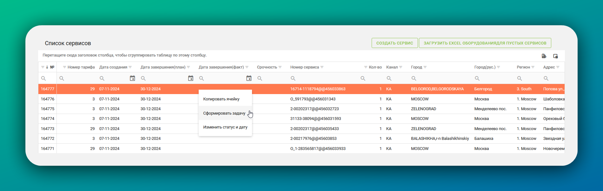

Координатор
Сервисы
Сервис — оборудование и проводимая над ним работа.
В ЛК они бывают трёх цветов:
- Жёлтые — имеют значение «Срочно» в столбце «Срочность»
- Синие — до плановой даты завершения осталось до трёх дней
- Красные — всё, что просрочено хотя бы на один день
Сервисы приобретают статусы:
- Открыто
- В агенстве
- В работе
- Выполнен
- Холостой выезд
- Завершён агенством
Не забывайте про инструменты форматирования таблиц: напишите город и статус В агенстве напротив .
Формирование задачи из сервисов
Откройте вкладку Сервисы и выберите «Сервисы JTI». Откроется таблица со списком сервисов. 
{kind=link}
Чтобы «упаковать» сервис в задачу, правой кнопкой мыши нажмите на строку сервиса и в меню выберите «Сформировать задачу». Нас интересуют сервисы только со статусом В агенстве.
В открывшемся окне заполните параметры задачи:
- Координатор — это вы!
- Бригадир — руководитель исполнителей.
- Исполнитель — им можеть быть и сам бригадир. Поле можно оставить пустым: тогда исполнителя назначит выбранный бригадир.
- Склад — город, где находится склад.
- Комментарий технику — заполните при необходимости.
{kind=link}
Чтобы добавить ремонтные или монтажные/демонтажные сервисы:
- В нижней таблице нажмите на . Выбранный сервис подсвечивается слегка оранжевым цветом, а превращается в
- Проверьте два основых атрибута: наименование материала и наименование сервиса. Если наименование сервиса отсутствует или неправильно заполнено, то:
- Пролистайте таблицу вправо.
- Нажмите на
- В появившемся окне нажмите на поле «Модель» и в открывшемся списке выберите модель.
- Нажмите на поле «Материал» и в открывшемся списке выберите подходящий материал.
{kind=link}
Ключ
Ключ также позволяет вам смотреть остатки по складам. Они указаны в поле «Количество всего».
После заполнения всех полей и добавления сервисов, нажмите на зелёную кнопку «Создать».
Задача создана!
Доработка
Если задача имеет состояние «На доработке», свяжитесь с исполнителем и обозначьте ему точные сроки выполнения. Задача перейдёт в статус «Завершена», только если все сервисы выполнены.
Создание заявки на склад
После создания задачи откроется страница с её параметрами, что вы ранее внесли.
Если что-то было внесено не так, внесите изменения и затем нажмите зелёную кнопку «Редактировать».
Заявка на слад создаётся только для монтажных или демонтажных сервисов, ремонтные сервисы заявки не требуют.
Чтобы создать заявку на склад:
- Выберите плановую дату отгрузки, нажав на
- Нажмите кнопку «Создать заявку на склад»
{kind=link}
{kind=link}
Проведение заявки на склад
Теперь заявки на склад проводит только специалист складского учёта.
Если заявка на склад не проведена, её можно редактировать.
Чтобы отредактировать проведённую заявку:
- Попросите специалиста складского учёта отменить проведение.
- Внесите изменения в заявку.
- Чтобы сохранить изменения, нажмите кнопку Сохранить.
Инструкции
Как изменить дату сервиса
- В разделе Сервисы выберите «Внутренние сервисы».
- Дважды нажмите на интересующий вас сервис.
- В разделе «Выбор услуги» нажмите на .
- Выберите новую планируемую дату завершения сервиса.
В чем отличие внутренних сервисов от сервисов JTI?
Это одно и то же, просто таблица внутреннних сервисов более информативна.
Как добавить нового сотрудника в ЛК
- Запросите у сотрудника документы для составления договора, в соответствии с его юридическим статусом:
- Копия свидетельства о постановке на учет в налоговом органе (ИНН)
- Копия паспорта (разворот страницы с фотографией и страница с регистрацией места жительства)
- Справка о постановке на учет (снятии с учета) физического лица в качестве налогоплательщика налога на профессиональный доход
- Банковские реквизиты (желательно в формате Word)
- Копия документа СНИЛС
- Электронная почта
- Адрес склада приема оборудования + контакт принимающий груз (ФИО + телефон + паспортные данные полностью)
- Адрес для документооборота + контакт (ФИО + телефон + паспортные данные полностью)
- Контакт, который будет забирать оборудование с терминалов транспортных компаний (ФИО + телефон + паспортные данные полностью)
- Заполненный файл с бригадой монтажников (для оперативного запуска проектов – подача данных на пропуски и т.п.)
- Копия листа записи или свидетельства о регистрации в качестве ИП.
- Копия свидетельства ИНН физического лица.
- Копия паспорта ИП (разворота с фотографией и разворота с регистрацией).
- Копия уведомления о переходе на УСН по форме №26.2-1 с отметкой налогового органа о получении и/или копия информационного письма налогового органа по форме №26.2-7 о подаче уведомления о переходе на УСН.
- Банковские реквизиты (желательно в формате Word).
- Электронная почта.
- Если у ИП отсутствует печать, необходимо предоставить скан письма от ИП с личной подписью. Вот образец.
- Адрес для документооборота + контакт (ФИО + телефон + паспортные данные полностью).
- Контакт, который будет забирать оборудование с терминалов транспортных компаний (ФИО + телефон + паспортные данные полностью).
- Заполненный файл с бригадой монтажников (для оперативного запуска проектов – подача данных на пропуски и т.п.).
- Адрес склада приема оборудования + контакт принимающий груз (ФИО, телефон, паспортные данные полностью).
- Копия листа записи ЕГРЮЛ о создании организации или свидетельства о присвоении ОГРН.
- Копия свидетельства о присвоении ИНН/КПП.
- Копия устава.
- Копия уведомления о переходе на УСН по форме №26.2-1 с отметкой налогового органа о получении и/или копия информационного письма налогового органа по форме №26.2-7 о подаче уведомления о переходе на УСН.
- Копия протокола общего собрания участников/решения единственного участника об избрании единоличного исполнительного органа (генерального директора/управляющего).
- Копия приказа о вступлении генерального директора (директора и т.п.) в должность.
- При наличии главного бухгалтера — копия приказа о возложении на него обязанностей по ведению бухгалтерского учёта.
- Доверенность на представителя (если договор подписывается по доверенности).
- Копия банковской карточки с образцом подписи и печати общества (для сопоставления с образцом подписи в договоре).
- Копия договора с управляющим общества (если функции единоличного исполнительного органа переданы управляющему).
- Копия бухгалтерского баланса за последний отчетный период с приложением электронной квитанции о приеме налоговым органом.
- Копия декларации по НДС за последний отчетный период с приложением электронной квитанции о приеме налоговым органом (для контрагентов с НДС).
- Копия декларации по налогу, уплачиваемому в связи с применением упрощенной системы налогообложения, за последний отчётный период, с приложением электронной квитанции о приеме налоговым органом (для контрагентов на УСН).
- Копия справки о среднесписочной численности работников за предшествующий календарный год по форме КНД 1110018 с отметкой о представлении в налоговый орган.
- Копия договора аренды помещений по юридическому адресу, производственных/складских помещений и/или копия свидетельства/выписки ЕГРН о праве собственности на занимаемые помещения, которые используются в предпринимательской деятельности контрагента для выполнения работ (оказания услуг)/поставки (в зависимости от предмета договора).
- Копия оборотно-сальдовой ведомости по счету 01 (с аналитикой по основным средствам) за предшествующий календарный год.
- Копия штатного расписания на текущую дату или выписка из него (указываются только общая штатная численность и наименование должностей).
- Копия паспорта генерального директора или копия банковской карточки с образцом подписи генерального директора и печати общества (для сопоставления с образцом подписи в договоре).
- Распечатанные фотографии арендуемых/собственных помещений (офисных, складских, производственных), используемых в предпринимательской деятельности для выполнения работ (заверенные печатью и подписью). Распечатки должны иметь пояснения о виде указанных на фотографиях помещений (офисное, складское, производственное и т.п.) и их принадлежности контрагенту (указать наименование правообладателя помещений).
- Реквизиты.
- Электронная почта.
- Адрес склада приема оборудования + контакт принимающий груз (ФИО, телефон, паспортные данные полностью)
- Адрес для документооборота + контакт (ФИО + телефон + паспортные данные полностью).
- Контакт который будет забирать оборудование с терминалов транспортных компаний (ФИО + телефон + паспортные данные полностью).
- Заполненный файл с бригадой монтажников (для оперативного запуска проектов – подача данных на пропуски и т.п.).
- Если у ИП отсутствует печать, необходимо предоставить скан письма от ИП с личной подписью. Вот образец.
-
Убедитесь в наличии и корректности всех полученных документов.
-
Отправьте документы на электронные адреса c просьбой заключить договор на работы, без складского хранения:
- Елена Попова: elena.p@posmdc.ru
- Лилия Кашевская: liliya.k@posmdc.ru
-
Получите два оригинала договора от отдела делопроизводства и передайте их исполнителю через курьерскую службу.
-
Отслеживайте получение договора исполнителем. Запросите возврат одного подписанного и заверенного печатью экземпляра в офис.
-
После получения подписанного договора подготовьте и отправьте письмо ответственному менеджеру за регион.
Шаблон письма
Тема письма: «Добавление контрагента»
Наименование: ИП «Иванов Иван Иванович»
Почта: ivan@yandex.ru
Телефон: +7 (800) 300-10-20
Город проведения работ: Смоленск
В ответном письме менеджер пришлёт логин и пароль от личного кабинета контрагента.
Добавление техника к существующему бригадиру
-
Отправьте менеджеру:
- ФИО бригадира, к которому необходимо добавить техника.
- Данные техника:
- ФИО.
- Телефон.
- Электронная почта.
-
Получите ответ от менеджера:
В ответном письме менеджер отправит логин и пароль добавленного техника.